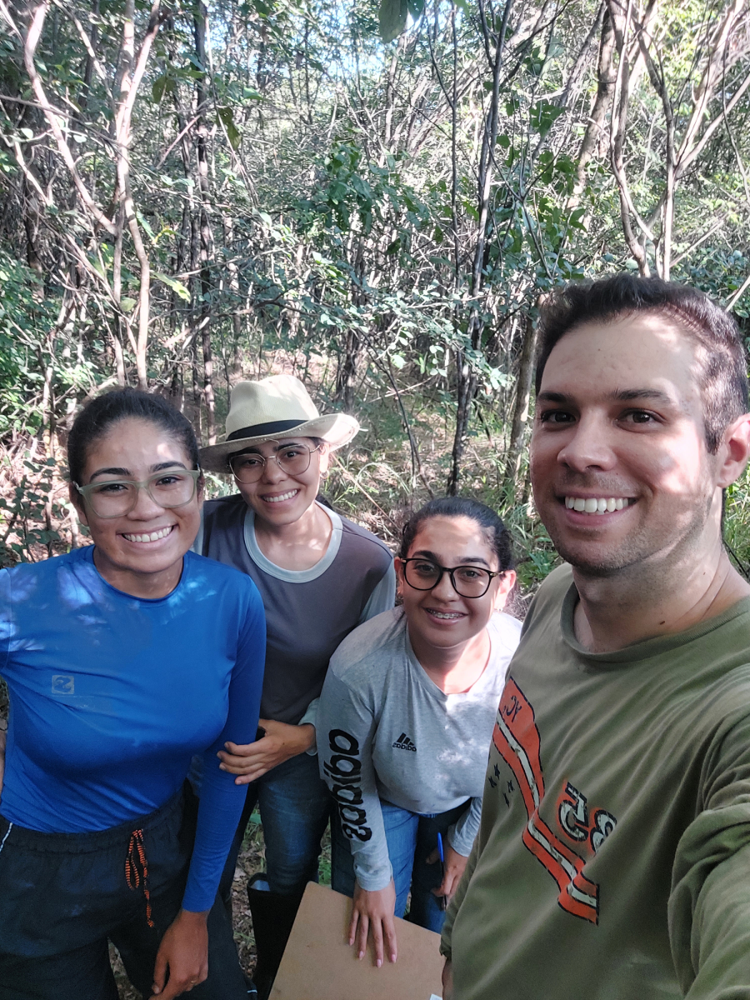

Coleta de amostras de solo, planta e água para análise isotópica de água e análise granulométrica do solo
NEXUS
Dois trabalhos de campo realizados entre os dias 21 e 27/07/2022 (estação seca) e 06 e 11/02/2023 (estação úmida), no campus da Universidade Federal do Oeste da Bahia (UFOB), no município de Barreiras-BA, representam o bioma Cerrado. Foram realizadas coletas de amostras de solo, planta e água (corpos hídricos da área e chuva), com o objetivo de caracterizar o estado hídrico e os mecanismos de uso da água pelas plantas por meio do uso de isótopos estáveis da água, a fim de avaliar a variabilidade sazonal (estação chuvosa x estação seca) na separação ecohidrológica nesse bioma, além de realizar a análise granulométrica do solo. Dez (10) espécies de plantas lenhosas comuns e representativas da região foram selecionadas para o estudo. Foram amostrados três indivíduos de cada uma das espécies em cada uma das estações do ano, totalizando 60 árvores amostradas. O diâmetro à altura do peito (DAP) de todas as plantas amostradas foi mensurado. Nas proximidades da área onde as amostras de plantas foram coletadas, cavas de solo foram abertas em três localidades (para efeito de triplicata), em cada uma das campanhas de campo. Nessas cavas, amostras de solo foram coletadas a cada 10 cm, até uma profundidade de 100 cm (ou até a profundidade máxima atingida no local).
Local: Barreiras
Tipo de bioma: Cerrado


